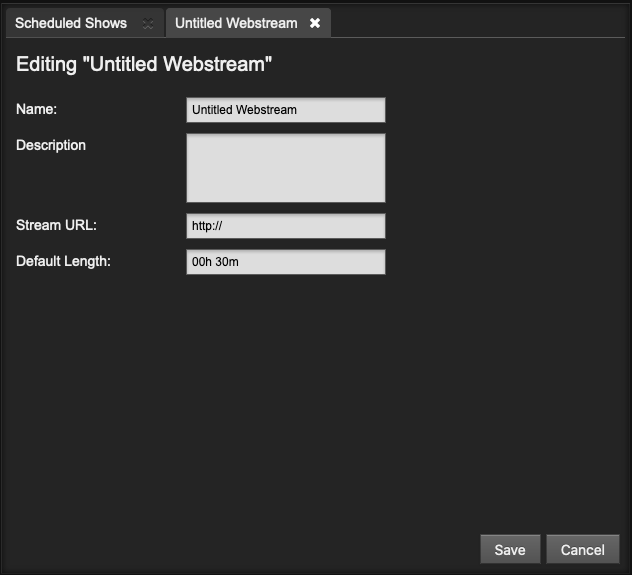

Adding a web stream
A web stream URL and metadata can be added to the LibreTime library, so that a remote stream can be searched for and scheduled to be pulled into a show. For example, at the top of the hour your station may pull a news report from journalists working in another studio. This is a different concept from Master Source and Show Source remote streams which are pushed into the LibreTime playout schedule.
To add a web stream, click the + New button on the left side of the Webstreams page. Like a playlist, web streams in the Library can have a title and Description, which may help you find them in searches later.

The Stream URL setting must include the port number (such as 8000) and mount point (such as remote_stream) of the remote stream, in addition to the streaming server name. A Default Length for the remote stream can also be set. If the stream is added at the end of a show which becomes overbooked as a result, it will be faded out when the show ends.
Note: LibreTime checks the remote webstream's status upon editing stream settings, so an offline stream will result in an error. There are many tools such as BUTT and MIXXX that can be used to send a test stream to LibreTime can save it; read more here.